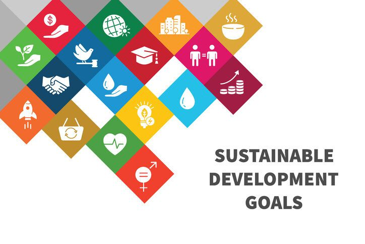
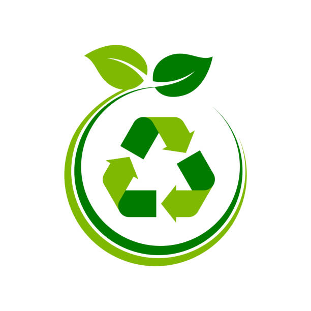
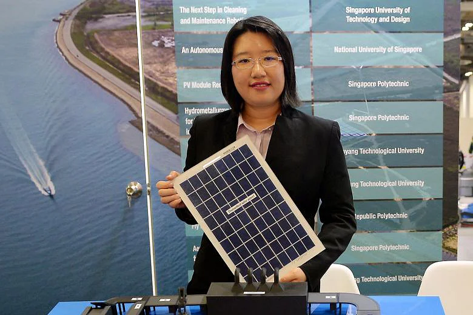
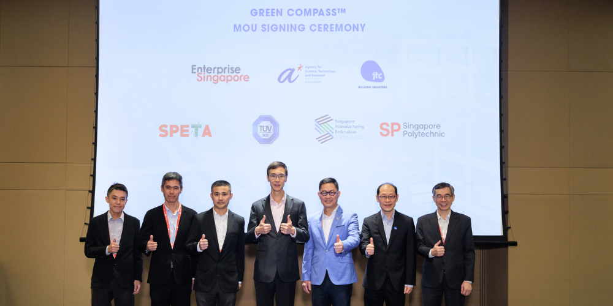

The contribution of SP in terms
of environmental sustainability.
About Singapore Polytechnic:
The Ministry of Education in Singapore has jurisdiction over Singapore Polytechnic, a post-secondary
educational institution and statutory board. SP, founded in 1954, is Singapore's first and oldest polytechnic.
Singapore Polytechnic began in the heart of Singapore's business sector. Today, the polytechnic is
conveniently placed on Dover Road, amid the educational belt and science hub of Singapore's western region.
SP graduates have made important contributions to Singapore's economic and industrial success, and several
are now well-known entrepreneurs. Others hold positions of responsibility and leadership in business,
industry, and government.
Diplomas featuring Common Core Curriculum (CCC)

The CCC prepares students for the green economy by exposing them to inter-disciplinary learning experiences
and global issues framed by the Singapore Green Plan and the United Nations' Sustainable Development Goals,
where they will learn to develop prototype sustainability solutions for real-life problems. Additionally,
these programs will be able to give students a well-rounded education that stresses interdisciplinary
learning, critical thinking, and global perspectives. The CCC component prepares students for the challenges
of the green economy by providing them with the skills and information they will need to address
sustainability concerns in their particular industries.
Waste Management and Recycling

SP has created technology and procedures to improve e-waste and solar panel recycling, allowing valuable
materials to be recovered rather than burnt. Some of these advances save costs by up to 20% when compared
to traditional approaches. Furthermore, the school has strategically placed recycling bins throughout the
campus, promoting recycling activities among students and staff. SP also undertakes educational programs
and workshops to create awareness about trash reduction and recycling.
Green Spaces
SP's lush campus is home to an amazing richness of flora, and the university has preserved natural spaces
on its grounds. These green spaces serve several functions, including aesthetic appeal, an enjoyable place
to learn, and biodiversity promotion. SP exhibits its dedication to environmental sustainability by
combining different types of vegetation and employing sustainable landscaping strategies. These changes not
only improve the campus atmosphere but also provide youngsters with excellent educational opportunities.
Go Green SP event led an SP pledge with students and staff for our
commitment and support towards the nation-wide sustainability movement.
SP have launched a beautiful 120-page coffee table book featuring
flora and fauna found on its premises, including their 11 community gardens, the book is titled “Campus in
a Garden”.

Singapore Poly launches country's first-ever solar photovoltaics
recycling line

Green CompassTM is an assessment and roadmapping tool. It helps companies to
better manage their carbon emissions, energy, water, and waste impact, as well as chart roadmaps for
environmental sustainability.